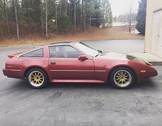

-
Thought I read or heard somewhere that you can rebuild the OEM adjustable shocks/struts for those wanting to stay original. -
So I took a couple of shots of what I ended up with for anyone that was interested.
I went with 16x9 MST wheels. 1st photo is on stock suspension.
Next I went with a cheaper suspension set up ( mostly looking for a drop but after a good amount of research, apparently these are popular in the BMW community ) Stagg SHS struts & shocks with Vogtland springs. It actually sat down really well.
Honestly pretty happy about the whole thing.-
 #17.1z31_boy commentedSo how do the stagg shocks and vogtland springs handle?
#17.1z31_boy commentedSo how do the stagg shocks and vogtland springs handle? -
surprisingly well. i think about…3k miles on them now? no stiffness loss. overall still happy with the purchase (from back in march i believe). Just looking at coilover swap eventually, after i rebuild this vg30et and swap it in there.
-
-
Tokico HP fronts are on a 3 to 4 month back order.Who needs new car's, Nissan had it right 30 years ago!!!

Copyright © 2006–. All rights reserved. Privacy Policy
Comment